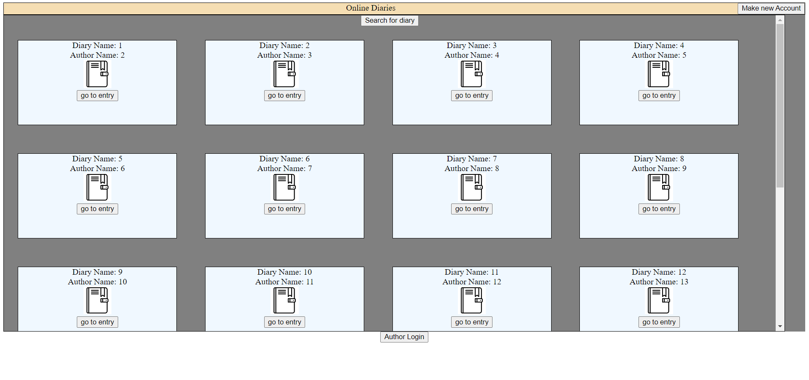

Online Diary
Description: This program is a website that allows users to make their own password-protected online diary where diaries can be
shown publicly with the author's permission but the diaries can only be edited by the author. A casual user can click
on any of the diaries to go to a new tab where all the visible links to the entries of that diary can be shown in order.
If an entry link is clicked, the user goes to a new tab where the entry is shown along with a next/prev option at the
top to go to different entries like flipping pages in a diary. Each entry will have its own topics with text and name.
The general idea is to have a password and username input at the bottom to access one’s personal diary as the author to
edit all their diaries in a separate tab. Once the user logs in to their diary as an author, they gain the option to
make/delete new entries or make them visible. Once the user clicks on an entry they will go to a book view where the entries
of the diary will be shown in “pages” that can be “flipped”. Said entries will have topics that come in the form of a box
with a section for text and another section for images that will get displayed along with the text. A user can have the option
to make/delte as many topics as they want with each topics having a visibility option in the form that makes the entry visible
or non-visible publicly. Once the users are done editing the topic. (Note: Due to the difficulty in implementing a server for
this website, the information inputted to the dairies and their entries and topics will not be saved and the visibility option
will be left non-functional since all the information is reset as soon as one of the website pages is closed.) Once they are done
editing all the entries, the user can press a logout button at the top right to log out of author view and go back to the normal
public view.
Languages used: HTML 5, CSS, JavaScript, JSON

click here to see the project on Git Hub